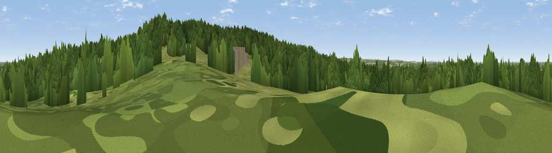

Viewpoint near Ewshot
#40189 in England · top 57% of its area beats it · near EwshotWhere it is
The exact computed spot (SU 81449 50352). Click the marker for map links.
The view, rendered

A 360° render of this exact spot computed from the terrain model, tree cover and land cover — summer colours, afternoon light, calibrated against photographs of famous viewpoints. Real trees, hedges and buildings will differ in detail.
The panorama
Grey silhouette: terrain skyline in each direction (720 bearings, Earth curvature and refraction included). Dashed green: skyline with trees (+15 m) and buildings (+8 m) as obstacles. Blue strip: how far the ground is visible on each bearing.
Where the view opens
Wedge length = distance to the farthest visible ground on that bearing (vegetation-aware). Rings at 10, 25 and 50 km.
What fills the view
57% woodland · 35% grassland · 5% built-up · 3% cropland
Angular shares of the visible panorama (visual magnitude), not map area. Landscape diversity 0.42 (0–1 Shannon).
Key numbers
More beautiful places nearby
The staircase of upgrades: each row has a higher view potential than everything closer. Driving times are estimates from straight-line distance, calibrated against real road routing — check an actual route before setting out.
| Place | Direction | Drive | Score |
|---|---|---|---|
| Viewpoint near Ewshot | E · 1 km | ~3 min | 51.4 |
| Viewpoint near Ewshot | S · 1 km | ~3 min | 52.5 |
| Viewpoint near Upper Hale | E · 2 km | ~6 min | 58.3 |
| Horsedown Common | WSW · 5 km | ~12 min | 59.0 |
| Viewpoint near Puttenham | ESE · 10 km | ~19 min | 62.0 |
| Viewpoint near Wanborough | E · 13 km | ~24 min | 65.5 |
| Viewpoint near Compton | E · 15 km | ~26 min | 66.7 |
| Viewpoint near Hascombe | SE · 22 km | ~36 min | 70.1 |
51.24653, -0.83446 · source: osm peak · position refined by local search. Computed location — check access rights before visiting.